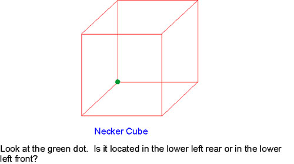

Does teleportation use a 4th spatial dimension?

The Chinese researchers reported in their teleportation experiments that high-speed
photography/videotaping recorded test specimens physically 'melding' or blending with the walls of
sealed containers, and in a different series of experiments the test specimens would simply disappear from
inside the container only to reappear at another location (after seconds to several minutes of time
transpired). They also reported in the series of radio micro-transmitter experiments that there were large
fluctuations in the intensity (in both amplitude and frequency) of the monitored signal to the effect that it
would either completely disappear or become extremely weak (to the extent that the monitoring
instruments could scarcely detect it); and they discovered that there was a definite correlation between the
change in strength (i.e., radical frequency shifts were observed) of the monitored radio signal and the
teleportation of the radio micro-transmitter, such that the weak or absent signal indicated that the
specimen was 'nonexistent' (or in an altered physical state) during teleportation. This data is important
because without the aid of electronic monitoring instruments, the average person's sensory organs and
usual methods of detection are temporarily unable to perceive the test specimen's (ambiguous) existence
during the teleportation process. This data offers an important clue on what the teleportation mechanism
is.
It is beyond the scope of this study to propose a complete self-consistent physics theory of
consciousness/mind, which explains how the mind can activate p-Teleportation and related psychotronics
phenomena. This topic has been under study in recent decades by a legion of medical science, bio- and
neuro-physiology, psychology, mathematics, philosophy, and physics experts. Many different theories
with varying degree of theoretical maturity and self-consistency have been proposed over the years, and
most of them have not yet been experimentally tested for various reasons. However, some first-order
experimental work has been done (Mitchell, 1974b; Targ and Puthoff, 1977; Wolman et al., 1986; Radin,
1997; Tart et al., 2002). Ironically, quantum mechanics theory, and the related physics of quantum
entanglement and teleportation, has become the primary focus of all of the physics theories of
consciousness/psychotronics that have been recently proposed (see for example, Shan, 2003). Wolman et
al. (1986) and Radin (1997) provide a review and discussion on recent theories and experiments that are
based on quantum physics theory (see also, Walker, 1974; Targ and Puthoff, 1977; Mitchell, 1999, and
the references cited therein; Tart et al., 2002). It appears that the physics of q-Teleportation (Chapter 3)
has tremendous relevance to the physics of p-Teleportation and psychotronics.
In the following I propose a parsimonious first-order hypothesis that can explain the gross features of
both the Chinese p-Teleportation data and the other reported p-Teleportation phenomena. But I will
refrain from including any role that might be played by quantum phenomena since the scientific
community has not yet settled that particular issue. (However, it is apparent that quantum theory and
quantum phenomena will likely play a key role in a formal physics theory of PK and psychotronics.)
First-Order Hypothesis:
- Fact 1: The mature discipline of mathematical geometry developed the properties of higher
dimensional spaces (Reichenbach, 1957; Manning, 1977; Rucker, 1977). An example of one
such property that is of relevance to the hypothesis: One can visualize a four-dimensional world
by using color as the 4th dimension. We can think of a three-dimensional world, whereby objects
pass through one another if their colors (i.e., four-dimensional locations) are different
(Reichenbach, 1957). For example, color can be used as a 4th dimension to see how a knot in
three-dimensions can be untied in a 4th spatial dimension without moving the ends of the cord.
That is because a cord cannot stay knotted in four-dimensional space, because the extra degree of
freedom will cause any knot to slip through itself. Two other interesting and relevant examples
are that the links of a chain may be separated unbroken in the 4th dimension, and a flexible sphere
may be turned inside out without tearing in the 4th dimension (Manning, 1977; Rucker, 1977).
- Proposition 1 and Fact 2: It has been proposed that our space actually possesses a slight fourdimensional
hyperthickness, so that the ultimate components of our nervous system are actually
higher dimensional, thus enabling the human mind/brain to imagine four-dimensional space
(Hinton, 1888, 1904; Rucker, 1977). If this is the case, then the three-dimensional nets of
neurons that code thoughts in our brain may form four-dimensional patterns to achieve fourdimensional
thought. The 'bulk' space in 3-brane theory (see Section 4.1), and experimental
data from the Remote Viewing program (see Section 5.1), provide support for this concept. Can
we see into the 4th dimension and have four-dimensional thoughts? Yes, we can. Proof (see,
Rucker, 1977, 1984): If you look at a Necker cube for a while, it spontaneously turns into its
mirror image and back again. If you watch it do this often enough, the twinkling sort of motion
from one state to the other begins to seem like a continuous motion. But this motion can only be
continuous if it is a rotation in four-dimensional space. The mathematician August F. Möbius
discovered in 1827 that it is in fact possible to turn a three-dimensional solid object into its mirror
image by an appropriate rotation through four-dimensional space (a.k.a. hyperspace rotation).
Thus, it is actually possible for our minds to perform such a rotation. Therefore, we can actually
produce four-dimensional phenomenon in our minds, so our consciousness is four-dimensional.
Rucker (1984) shows another dramatic example of being able to see into the 4th dimension via a
'Neck-A-Cube.'

- Fact 3: Another property of higher dimensional geometry (Reichenbach, 1957; Rucker, 1977,
1984) is that one can move through solid three-dimensional obstacles without penetrating them
by passing in the direction of the 4th (spatial) dimension. The 4th dimension is perpendicular to all
of our normal three-dimensional space directions, and so our three-dimensional enclosures have
no walls against this direction.
- Conclusion and Hypothesis: Therefore, the results of the Chinese p-Teleportation experiments
can simply be explained as a human consciousness phenomenon that somehow acts to move or
rotate test specimens through a 4th spatial dimension, so that the specimens are able to penetrate
the solid walls/barriers of their containers without physically breaching them. No real
dematerialization/rematerialization of the specimens takes place. The intensity fluctuations of the
radio micro-transmitter specimen's electromagnetic signal, and the apparent blending of the other
specimens with the walls of their containers, represent the passage of the specimens through a 4th
spatial dimension. During teleportation the radio signals emitted by the micro-transmitter became
weak/non-existent and fluctuated, because they were spreading out into the 4th dimension and
became undetectable in our three-dimensional space. The weak signals that were ('barely')
detected represent the leakage of a portion of the radio signal back into our three-dimensional
space from the 4th dimension during teleportation. The observed blending of the other specimens
with the walls of their containers is how the movement/rotation of the specimens through the 4th
dimension was visually interpreted by the mind (along the lines of the Necker cube or Neck-ACube
examples).
—Eric W. Davis, Teleportation Physics Study
|